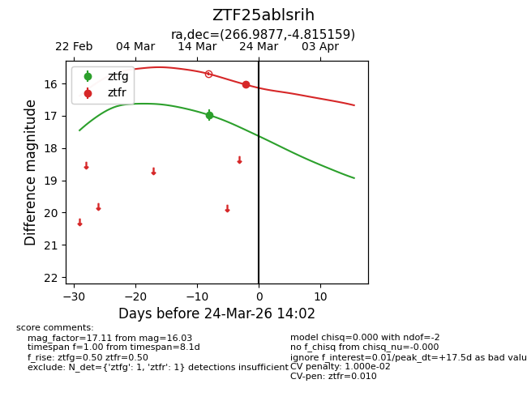
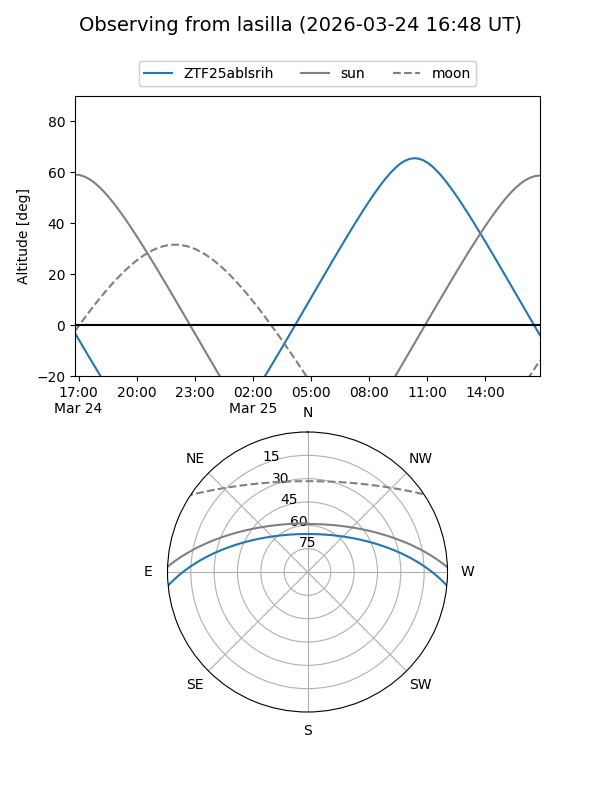
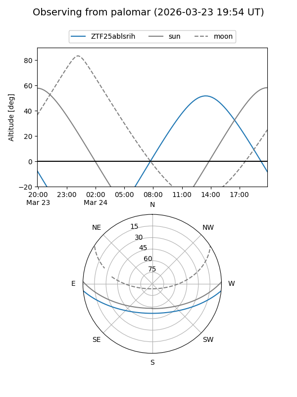
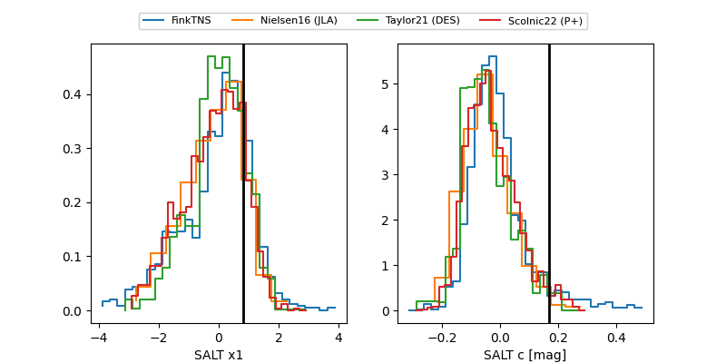

ZTF25ablsrih
Target ZTF25ablsrih at 2026-03-24 14:05
Aliases and brokers:
FINK: link
Lasair: link
ALeRCE: link
alt names
ZTF25ablsrih (ztf,fink_ztf)
Coordinates:
equatorial (ra, dec) = 266.9877,-4.81516
equatorial (HMS+DMS) = 17:47:57.05,-04:48:54.57
galactic (l, b) = (21.2044,+11.78640)
Flags:
likely cv
Photometry:
last ztfg=16.98, ztfr=16.03
1 ztfg, 1 ztfr detections
Lightcurve

Visibility


Additional plots
